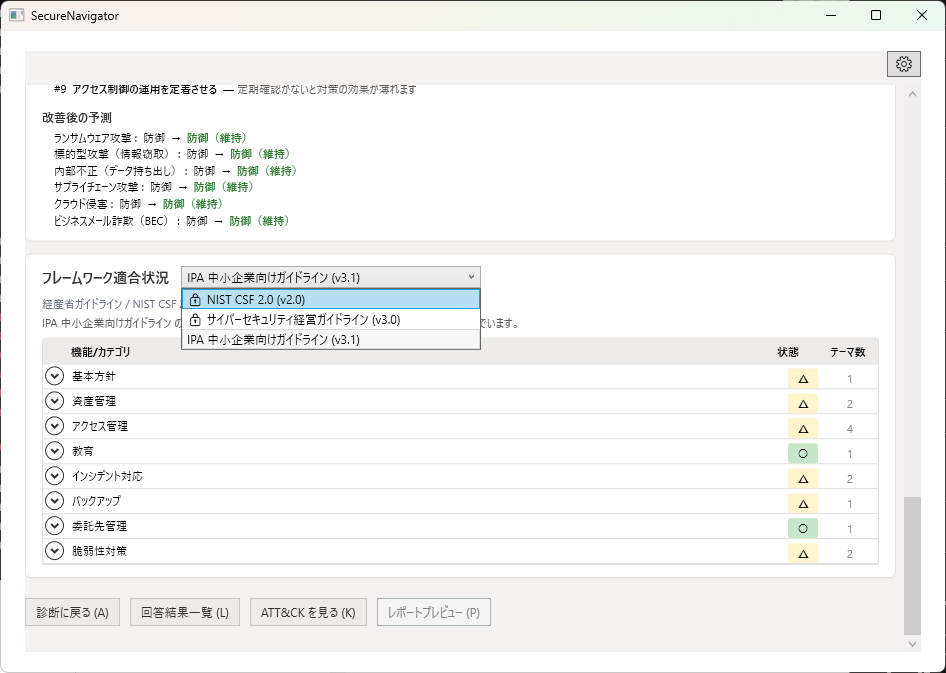
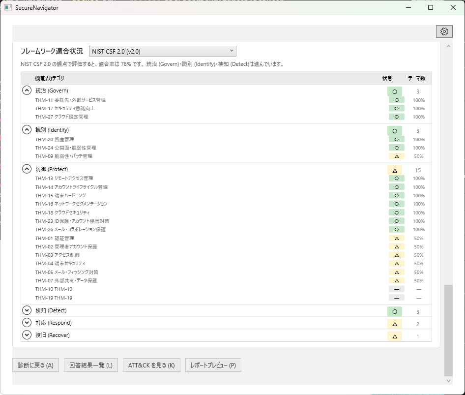
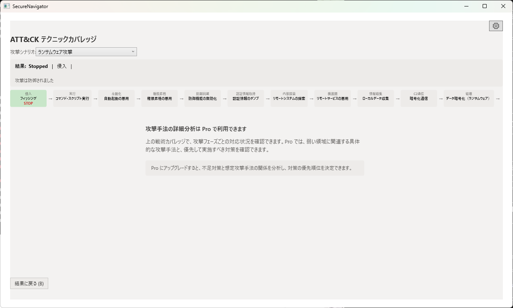
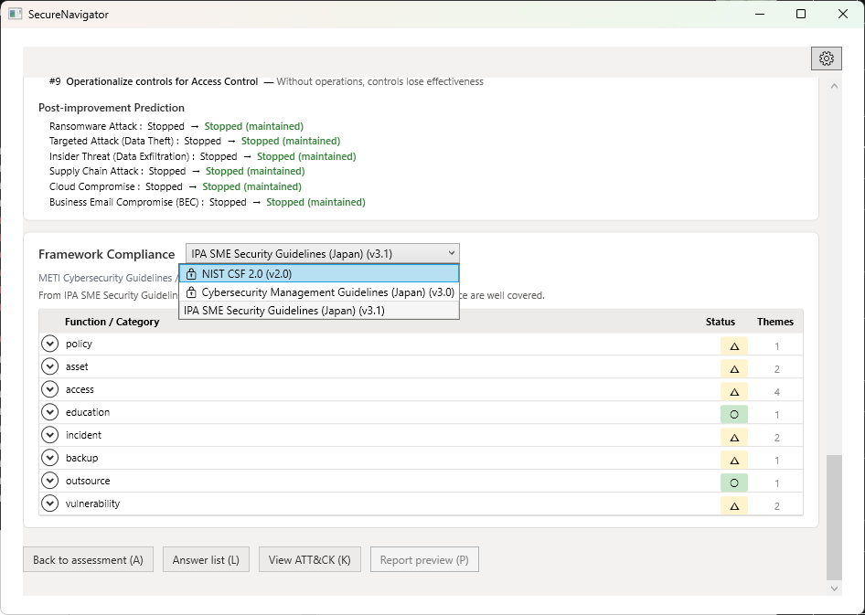
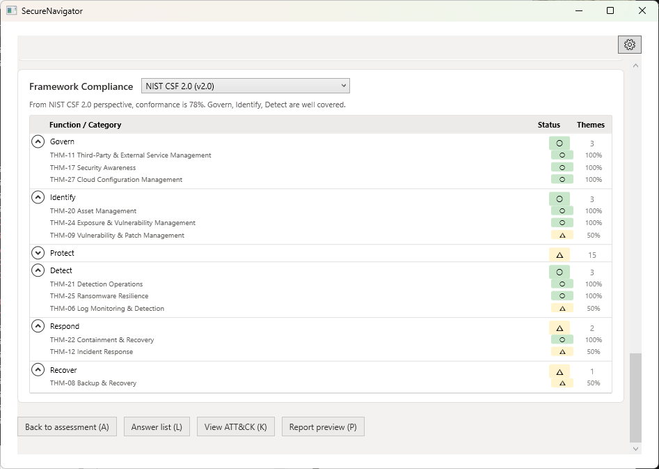
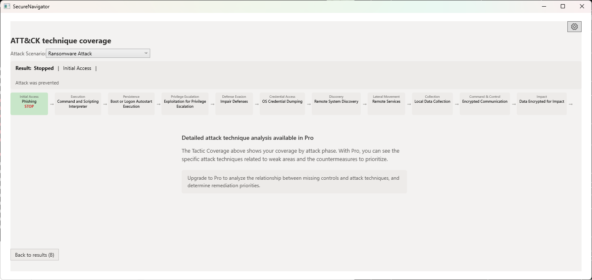

機能比較、Pro で追加される機能、アップグレード方法
| 機能 | Free | Pro |
|---|---|---|
| 全質問への回答（ヒアリング） | 対応 | 対応 |
| 攻撃シナリオシミュレーション（6シナリオ） | 対応 | 対応 |
| 不足がみられる面とテーマ（画面表示） | 対応 | 対応 |
| 弱点マップ（領域 x 観点） | 対応 | 対応 |
| IPA 中小企業向けガイドライン参考確認 | 対応 | 対応 |
| 経産省サイバーセキュリティ経営ガイドライン参考確認 | --- | 対応 |
| NIST CSF 2.0 参考確認 | --- | 対応 |
| ATT&CK テクニックの詳細 | --- | 対応 |
| レポートプレビュー | --- | 対応 |
| HTML / Markdown 保存・PDF 出力 | --- | 対応 |
| セッション保存数 | 1件 | 3件 |
Free 版では IPA 中小企業向けガイドラインを参考にした確認を利用できます。Pro 版では経済産業省のサイバーセキュリティ経営ガイドラインおよび NIST Cybersecurity Framework 2.0 を参考にした対応状況の表示も利用できます。


Pro 版では、各テクニックの詳細（セルの展開・詳細ペイン）を確認できます。Free 版でも、戦術ごとのカバレッジと状況別の群は確認できます。

Pro 版では、レポートをプレビューし、HTML / Markdown や PDF ファイルとして保存できます。レポートには、対策状況に不足がある項目、CSF カバレッジ、主要リスク、想定攻撃シナリオの節が含まれます。
Free 版では診断セッションを1件のみ保存できますが、Pro 版では最大3件まで保存可能です。複数の組織や部門の評価を並行して管理したり、時期を変えて同じ組織を再評価して改善の進捗を確認する際に便利です。
Pro へのアップグレード後は、追加のガイドライン参考確認やレポート機能が利用可能になります。
Feature comparison, what Pro adds, how to upgrade
| Feature | Free | Pro |
|---|---|---|
| Full assessment (all questions) | Yes | Yes |
| Attack scenario simulation (6 scenarios) | Yes | Yes |
| Layers and themes with gaps (on-screen) | Yes | Yes |
| Weakness map (Domain x Perspective) | Yes | Yes |
| IPA SME Guidelines reference checks | Yes | Yes |
| METI Cybersecurity Management Guidelines reference checks | --- | Yes |
| NIST CSF 2.0 reference checks | --- | Yes |
| ATT&CK technique detail | --- | Yes |
| Report preview | --- | Yes |
| HTML / Markdown saving and PDF export | --- | Yes |
| Saved sessions | 1 | 3 |
While the Free edition supports reference checks using the IPA SME Guidelines, Pro adds status views using the METI Cybersecurity Management Guidelines and NIST Cybersecurity Framework 2.0 as reference material.


Pro provides the details of each technique (expandable cells and a detail pane). The Free edition still shows the coverage for each tactic and the status groups.

Pro lets you preview the report and save it as HTML / Markdown or a PDF file. The report includes sections for items with gaps in control status, CSF coverage, key risks, and attack scenarios.
The Free edition allows saving 1 assessment session, while Pro supports up to 3. This is useful for evaluating multiple organizations or departments in parallel, or re-assessing the same organization at different times to track improvement progress.
After upgrading to Pro, additional framework reference checks and report features become available.